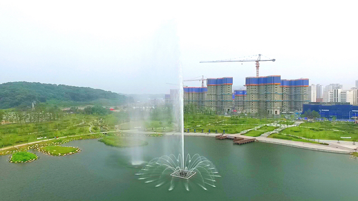
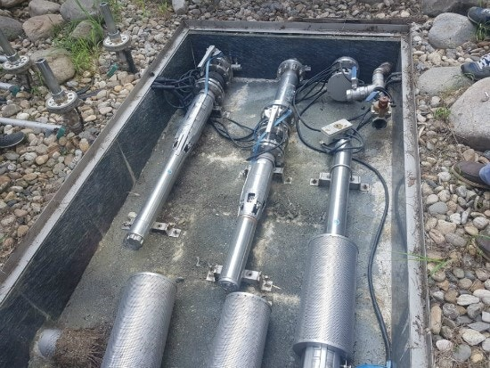

음악분수
스피커에서 흘러나오는 음악의 리듬에 맞춰 웅장한 분수가 연출되는 환상적인 분수 입니다.

바닥분수
공원이나 광장의 바닥에 설치되어 시민들이 함께 참여할 수 있는 분수 입니다.

고사분수
높은 물기둥을 연출하여 랜드마크 역할을 수행하는 상징적인 분수입니다.

조형분수
수조형 분수대에 조형물과 함꼐 조화를 이루는 분수 입니다.

일반분수
연못, 하천, 공원, 인도 등 연출법 (프로그램)에 따라서 다양한 연출이 가능하며, 일반적으로 공원, 인도 에서 볼 수 있습니다.

연못 및 계류
물이 흐르는 시냇물 연출로, 계곡과도 같은 모습이고 공간 활용도가 높고 주변 조경에도 좋은 영향을 미칩니다.

유지 관리 및 AS
분수대의 유지관리 및 AS 서비스를 시행중 입니다. 분수대 점검 (노즐, 수중등, 펌프, 시스템 등)